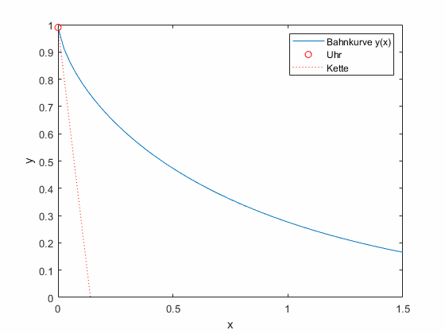

Github Repository
Github RepositoryIntegration von ODEs mit expliziten Verfahren
Contents
Voraussetzungen
Schwingungen
Numerische Integration analytischer Funktionen
Lerninhalte
Explizite Integrationsverfahren von gewöhnlichen Differentialgleichungen
Integration von ODEs mit expliziten Verfahren¶
Gewöhnliche Differentialgleichungen (Ordinary Differential Equations, ODEs) können oft nicht analytisch gelöst werden.
Während die harmonische Schwingungsgleichung
eine analytische Lösung besitzt, hat das inverse Tangentenproblem (auch Traktrix genannt)
schon keine klare analytische Lösung mehr. In der Praxis begegnen uns viele Fälle, in denen sich zwar eine Differentialgleichung aufstellen, aber nicht analytisch lösen lässt.
Was war nochmal ein inverses Tangentenproblem?
Gottfried Wilhelm Leibniz beschäftigte sich um 1676 mit geometrischen Problemen. Beim sogenannten inversen Tangentenproblem zog er die Uhrenkette seiner Taschenuhr entlang der Schreibtischkante und fragte sich, auf welcher Bahnkurve \(y(x)\) sich die Uhr bewegt.
Abbildung 1: Leipniz’ Taschenuhrenproblem. An der Kette (rot gestrichelt, konstante Länge) wird die Taschenuhr (roter Kreis) gezogen. Sie beschreibt eine Bahnkurve (blau), die als Differentialgleichung beschrieben wird.
Dabei machte er die Beobachtung, dass die Uhrenkette immer tangential an der Bahnkurve anliegt. Damit stimmen \(y'(x)\) und die Steigung der Geraden entlang der Kette überein und für eine Kette der Länge \(L\) erhalten wir
Die Bahnkurve \(y(x)\) hängt natürlich davon ab, auf welcher Höhe die Uhr in \(x=0\) positioniert wird. Daher muss noch ein Anfangswert \(y(0)=y_0\) festlegt werden.
Hinweis
Mit senkrechter Kette, d.h. \(y(0)=d\) kann nicht gestartet werden, weil in dem Fall der Nenner null wird. Daher legen wir den Anfangswert z.B. auf \(y(0)=0.99 d\) fest.
Wichtige Begriffe¶
Explizite Formulierungen¶
Die Traktrix können wir nach \(y'\) umformen zu
Wenn wir die ODE in der Form
schreiben, sprechen wir von einer expliziten Formulierung. Diese Form ist besonders interessant für uns, denn wir können unsere Kenntnisse aus der numerischen Integration auf sie anwenden. Das ist besonders hilfreich, wenn wir die Funktion, wie die Traktrix, nicht analytisch integrieren können.
Schrittweise Integration¶
Wie die numerische Integration bekannter Funktionen können wir \(y'(x)\) über das Teilintervall \([x_i,x_{i+1}]\) integrieren.
Durch Umstellen nach \(y_{i+1} = y(x_{i+1})\) erhalten wir nach jedem Teilintervall einen neuen Funktionswert für \(y_{i+1}\).
Für die schrittweise Integration führen wir außerdem ein
Anfangswertprobleme¶
Mit der Annahme, dass \(y_{i+1} = f(y_i)\) ist, müssen wir ein \(y_0\) festlegen, von dem aus wir starten. Für das Taschenuhrenbeispiel ist es einfach \((0,d)\). Für andere ODEs, wie die Schwingungsgleichung, müssen wir Anfangswerte sinnvoll festlegen. Für das Pendel heißt das, wie hoch es anfangs hängt und wie schnell es sich bewegt. Bei ODEs sprechen wir daher auch von Anfangswertproblemen (AWPs oder IVPs, Initial Value Problems).
Jetzt müssen wir noch das Integral geeignet approximieren.
Aufgabe 1: Linke Rechteckregel¶
Für die Integration bekannter Funktionen entspricht die linke Rechteckregel einem Rechteck unter dem Punkt \(x_i\):

Abbildung 2: Integral einer bekannten Funktion mit der linken Rechteckregel.
Bei der Integration einer ODE entspricht die linke Rechteckregel dem Vektorpfeil (der Ableitung) im Punkt \((x_i,y_i)\):

Abbildung 3: Integration einer Differentialgleichung mit der linken Rechteckregel. Das Vektorfeld (rote Pfeile), das die Differentialgleichung an beliebigen Punkten \((x,y)\) beschreibt, wird immer am linken Rand des diskretisierten Intervalls (\(x_0, x_1, ...\)) ausgewertet, um auf den nächsten Startwert zu schließen (blaue Pfeile). Dabei wird hier die ideale Lösung (blau gestrichelt) unterschätzt.
Wenden Sie die linke Rechteckregel
auf die Traktrix an. In dem Code ist in Zeile 8 bereits x=xspan(i) definiert. Das kommt in der Traktrix nicht vor, ist aber für andere Gleichungen \(f(x,y)\) sehr relevant, wie Sie weiter unten sehen werden.
Was passiert bei \(x=0\)? Wie können Sie dem Problem ausweichen?
Hinweis
Dieses Vorgehen entspricht dem expliziten Eulerverfahren, das in dem Kapitel Stabilität des expliziten versus impliziten Eulerverfahrens weiter dikutiert wird. Die rechte Rechteckregel entspricht dem impliziten Eulerverfahren, das in dem Kapitel Integration von ODEs mit impliziten Verfahren behandelt wird.
Butcher-Tableau
Die hier behandelten Integrationsverfahren lassen sich mithilfe von Butcher-Tableaus leicht übersichtlich anordnen. Für das explizite Eulerverfahren lautet das Butcher-Tableau
\(\begin{array} {c|c} 0\\ \hline & 1 \end{array}.\)
Die 0 oben links bedeutet, dass für den ersten Zwischenwert (hier gibt es nur einen) die Stelle $x_i$ verwendet wird. Die 1 unten rechts bedeutet, dass das Ergebnis aus der ersten Zeile zu 100 % in $y_{i+1}$ eingeht. Komplexere Butcher-Tableaus werden weiter unten zusammen mit den zugehörigen Verfahren erläutert.
```
% your code here
y0 = 1;
n = 20; % number of timesteps
xmax = 10;
xspan = linspace(0,xmax,n);
y = zeros(1,n);
for i = 1:n-1
x = xspan(i);
y(i) = ...
end
plot(xspan,y)
Mehrstufige Verfahren¶
Aufgabe 2: Mittelpunktsregel¶
Um eine größere Genauigkeit zu erreichen, wenden Sie die Mittelpunktsregel an.

Abbildung 4: Integral einer bekannten Funktion mit der Mittelpunktregel.
Hieraus ergibt sich für die schrittweise Integration
Hierbei ist \(\frac{x_i+x_{i+1}}{2}\) gleichbedeutend mit \(x_{i+\frac{1}{2}}\), beziehungsweise \(x_i + \frac{1}{2}h\). Wir verwenden weiter unten vor allem die letzte Form.

Abbildung 5: Integration einer Differentialgleichung mit der Mittelpunktregel. Das Vektorfeld (rote Pfeile), das die Differentialgleichung an beliebigen Punkten \((x,y)\) beschreibt, wird zwischen zwei Punkten des diskretisierten Intervalls (\(x_{1/2}, x_{3/2}, ...\)) ausgewertet (dicke rote Pfeile), um auf die Steigung zu schließen (blaue Pfeile). Dabei wird die Lösung schon deutlich besser angenähert.
Hinweis
Kopieren Sie Ihren Code in die neue Codebox oder auf Ihrem Rechner in eine neue Datei, um die Lösungen der verschiedenen Verfahren später vergleichen zu können. Übernehmen Sie die Anpassung für x.
% your code here
Streng genommen können Sie für die Approximation nicht \(y(x_i)\) verwenden, sondern müssen \(y\left(x_{i+1/2}\right)\) schätzen. Verwenden Sie dazu die linke Rechteckregel von oben.
Wir führen zur besseren Übersicht \(K_1\) für die linke und \(K_2\) für die mittlere Stützstelle ein und kommen zu
Übernehmen Sie die verbesserte Stützstelle \(K_2\) in Ihrem Code. In der Abbildung sehen Sie, wie sich die verbesserte Ableitung auswirkt. Die kleinen blauen Pfeile beschreiben die Ableitung \(f(x,y(x))\) an ausgewählten Stellen im Raum ausgewertet, da die ODE von der Zeit und dem Funktionswert abhängen kann.

Abbildung 6: Lösung der Traktrix (orange) mit explizitem Eulerverfahren (dunkelblau) und einem Runke-Kutta-Verfahren zweiter Ordnung (lila). Die Differentialgleichung kann an beliebigen Punkten \((x,y)\) ausgewertet werden (hellblaue Pfeile). Für die RK Lösung wird zuerst die Steigung am linken Rand ausgewertet (roter Pfeil), anschließend an dessen Hälfte die Steigung ermittelt (grüner Pfeil) und zuletzt diese Steigung am Startpunkt angesetzt.
Hinweis
Dieses Vorgehen entspricht einem Runge-Kutta-Verfahren 2. Ordnung. Für die Kosinus-Funktion (also die Integration der Sinus-Funktion) klappt das Verfahren sogar noch besser:

Abbildung 7: Lösung der Funktion \(y' = f(x,y) = \sin(x)\) mit der Lösung \(y = \cos(x)\) (orange) mit explizitem Eulerverfahren (dunkelblau) und einem Runke-Kutta-Verfahren zweiter Ordnung (lila). Die Differentialgleichung kann an beliebigen Punkten \((x,y)\) ausgewertet werden (hellblaue Pfeile). Für die RK Lösung wird zuerst die Steigung am linken Rand ausgewertet (roter Pfeil), anschließend an dessen Hälfte die Steigung ermittelt (grüner Pfeil) und zuletzt diese Steigung am Startpunkt angesetzt.
Butcher-Tableau
Das Butcher-Tableau für dieses Runge-Kutta-Verfahren 2. Ordnung lautet
\(\begin{array} {c|cc} 0\\ \frac{1}{2} & \frac{1}{2}\\ \hline & 0 & 1 \end{array}.\)
Hier kann zwischen den zwei Faktoren \(K_1\) und \(K_2\) unterschieden werden. \(K_1\) wird in der ersten Zeile direkt aus \(f(x_i,y_i)\) übernommen, fließt aber 0-fach in \(y_{i+1}\) ein. \(K_2\) dagegen geht auf \(x_i+\frac{1}{2}h\) (die linke \(\frac{1}{2}\)) und schätzt \(y_{i+\frac{1}{2}}\) mit \(y_i + \frac{1}{2} h K_1\) (die rechte \(\frac{1}{2}\)).
Wir hätten also für das explizite Eulerverfahren oben
schreiben können. Und für das RK-2 Verfahren
% your code here
Anwendung auf höherstufige Verfahren¶
Formulieren wir die Simpsonregel
um zu
Außerdem benennen wir die drei verwendeten Stufenwerte als \(K_1, K_2, K_3\), also
Wir können das aber noch besser: Bisher haben wir angenommen, dass wir \(y_i\) auch für die mittlere Stützstelle \(K_2 = f\left(x_i+\frac{1}{2}h,y_i\right)\) und die rechte Stützstelle \(K_3 = f\left(x_i+h,y_i\right)\) verwenden können. Wir haben aber schon eine Approximation, für die Stelle \(x_{i+\frac{1}{2}}\). Mit \(\frac{h}{2}\) multipliziert, können wir \(K_1\) nutzen, um mit der linken Rechteckregel \(y_{i+\frac{1}{2}}\) zu approximieren:
Genauso verwenden wir für \(K_3\) zusätzlich auch \(K_2\) als Stützstelle:
Setzen wir das zurück in die Simpsonregel ein, ergibt sich ein Runge-Kutta-Verfahren der Ordnung 3:
In der Abbildung sehen Sie, wie die einzelnen Faktoren das Ergebnis für eine Traktrix ergeben. Da die Auswertungsstelle für \(K_3\) unschön ist, finden Sie darunter auch die Aufstellung der Faktoren für eine Kosinus-Funktion.

Abbildung 8: Lösung der Traktrix (orange) mit explizitem Eulerverfahren (dunkelblau) und einem Runke-Kutta-Verfahren dritter Ordnung (lila). Die Differentialgleichung kann an beliebigen Punkten \((x,y)\) ausgewertet werden (hellblaue Pfeile). Für die RK Lösung werden in verschiedenen Schritten die Faktoren \(K_1, K_2, K_3\) ermittelt und zuletzt gewichtet mit \(\frac{1}{6},\frac{4}{6},\frac{1}{6}\) aneinandergereiht, um zum ersten Schritt zu gelangen.

Abbildung 9: Lösung der Funktion \(y' = f(x,y) = \sin(x)\) mit der Lösung \(y = \cos(x)\) (orange) mit explizitem Eulerverfahren (dunkelblau) und einem Runke-Kutta-Verfahren dritter Ordnung (lila). Die Differentialgleichung kann an beliebigen Punkten \((x,y)\) ausgewertet werden (hellblaue Pfeile). Für die RK Lösung werden in verschiedenen Schritten die Faktoren \(K_1, K_2, K_3\) ermittelt und zuletzt gewichtet mit \(\frac{1}{6},\frac{4}{6},\frac{1}{6}\) aneinandergereiht, um zum ersten Schritt zu gelangen.
Butcher-Tableau
Das Butcher-Tableau für dieses Runge-Kutta-Verfahren 3. Ordnung lautet
\(\begin{array} {c|ccc} 0\\ \frac{1}{2} & \frac{1}{2}\\ 1 &-1 &2 \\ \hline & \frac{1}{6} &\frac{4}{6} &\frac{1}{6} \end{array}.\)
In der dritten Zeile findet nun Beachtung, dass in \(K_3\)
\(x_i + 1\cdot h\) die Stelle ist,
\(K_1\) minus-1-mal und
\(K_2\) plus-2-mal in die Schätzung von \(y\) einfließt,
und für \(y_{i+1}\) die Faktoren mit \(\frac{1}{6}\) beziehungsweise \(\frac{4}{6}\) einfließen.
Hinweis
Verwechseln Sie nicht die mehrstufigen Verfahren mit Mehrschrittverfahren. Letztere verwenden zusätzlich zu \(y_i\) auch vorherige Auswertungen \(y_{i-c\cdot h}\).
Aufgabe 3: Implementierung des Runge-Kutta-Verfahrens 3. Ordnung¶
Passen Sie Ihren Code so an, dass zur Lösung anstelle des expliziten Eulerverfahrens das RK-Verfahren 3. Ordnung verwendet wird.
% your code here
Aufgabe 4: Ordnungen der Verfahren¶
Die Ordnung \(\mathcal{O(h)}\) gibt an, wie sich ein Fehler bei Verkleinerung der Schrittweite ändern. Ein Verfahren 2. Ordnung, \(\mathcal{O}(h^2)\) hat also bei Halbierung der Schrittweite nur noch ein Viertel des Fehlers.
Ermitteln Sie nun experimentell die Ordnungen der von Ihnen entwickelten Verfahren anhand der Traktrix:
explizites Eulerverfahren (Linke Rechteckregel)
Mittelpunktsregel ohne Schätzung von \(y_{i+\frac{1}{2}}\)
Runge-Kutta-Verfahren 2. Ordnung (Mittelpunktsregel mit Schätzung von \(y_{i+\frac{1}{2}})\)
Runge-Kutta-Verfahren 3. Ordnung (Simpsonregel)
% your code here